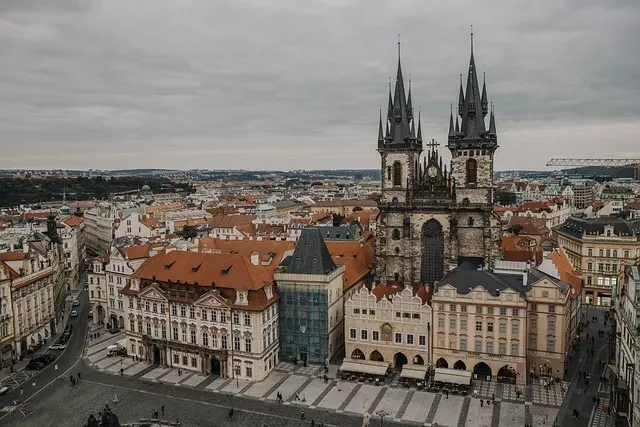

PRAGA
Explora la encantadora ciudad de Praga, la joya de Europa Central
Praga, la capital de la República Checa, es una ciudad llena de historia, arquitectura impresionante y una atmósfera encantadora. Conocida como la "Ciudad de las Cien Torres" o la "Joya de Europa Central", cautiva a los visitantes con su magnífico casco antiguo, sus castillos majestuosos y sus pintorescos puentes que cruzan el río Moldava.
Vas a encontrar una gran variedad de cosas para hacer y lugares para explorar. Podes pasear por el Puente de Carlos, uno de los íconos más famosos de la ciudad, y disfrutar de las vistas panorámicas del río y los edificios históricos. También puedes visitar el Castillo de Praga, uno de los castillos más grandes del mundo, y explorar sus diferentes salas y jardines. Si haces click aquí vas a poder acceder a mas información acerca de los tickets, precios, excursiones y mucho más.
Praga cuenta con una arquitectura impresionante que abarca diferentes estilos, desde el gótico hasta el barroco y el art nouveau. Podes pasear por la Plaza de la Ciudad Vieja y admirar la belleza de la Iglesia de Nuestra Señora de Týn y el famoso Reloj Astronómico. Otros lugares destacados incluyen la Catedral de San Vito en el Castillo de Praga y el Palacio Lobkowicz, que alberga una valiosa colección de arte y objetos históricos.
La gastronomía es una mezcla de influencias centroeuropeas, con platos deliciosos y abundantes. No dejes de probar el tradicional goulash, los knedlíky (bolas de masa), el svíčková (carne con salsa de crema) y los famosos dulces checos, como los trdelník y los buchty. Además, la cerveza checa es reconocida internacionalmente, por lo que te recomiendo probar algunas de las cervezas locales en los pubs de la ciudad.
Moverse por la ciudad es fácil gracias a su eficiente sistema de transporte público. Es posible utilizar el metro, tranvía o autobús para desplazarte por la ciudad. El transporte público es confiable y cubre una amplia red de rutas que te llevarán a todas las atracciones principales. Además, el centro histórico es perfecto para explorarlo a pie, ya que muchas de las atracciones están ubicadas cerca unas de otras.
Azul